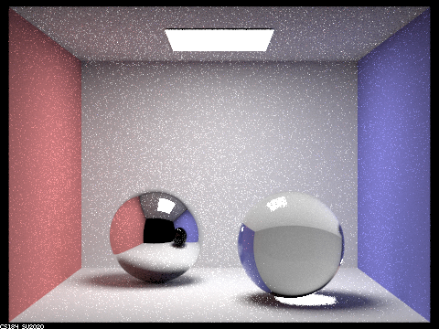
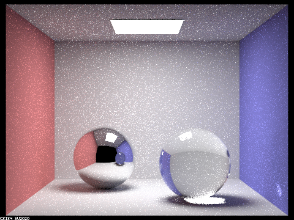
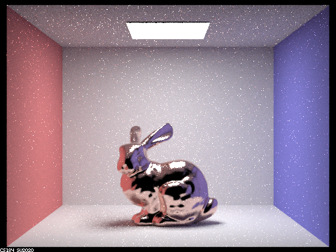

Part 1. Mirror and Glass Materials
Rendering of `CBspheres.dae` at different max ray depths



At ray depth 0, we just see the top light. At ray depth 1, we see the spheres without color, but is reflecting the top light. At ray depth 2, the scene reflection light appears. At ray depth 3, we can start to see some refraction in the shadows. At ray depth 4, the light reflected off the spheress can also been seen in the reflection of the other sphere. At ray depth 5 and 100, the image is about the same but the color gets brighter.
In the first bounce, there is no reflection or refraction on the spheres, in the second bounce we can start to see the reflection, but we don't see the light that is bounced between the spheres. In the third bounce, we start to see some refraction in the shadows. After the 4th bounce we start to see the light of the spheres in the reflections.
Part 2. Microfacet Material
Rendering of `CBdragon_microfacet_au.dae` rendered with differnt $\alpha$ at max ray depth = 7
|
|

|
|
|
|
As the alpha increases, the dragon looks less glossy and more diffused. In addition, the dragon’s surface looks rougher at higher values of alpha compared to lower values of alpha where the surface is significantly more shiny and polished.
Rendering of `CBbunny_microfacet_cu.dae` using cosine hemisphere sampling and importance sampling.
|
|

|
The hemisphere sampling has a lot more noise compared to importance sampling.
Show at least one image with some other conductor material, replacing `eta` and `k`. Note that you should look up values for real data rather than modifying them arbitrarily. Tell us what kind of material your parameters correspond to.
|
eta : (0.21646 0.42833 1.3284) k : (3.2390 2.4599 1.8661) alpha: 0.5 |
eta : (0.29294 0.28568 0.28733) k : (2.7181 2.3479 1.8333) alpha: 0.5 |
Part 3. Environment Lightl
Pick one *.exr* file to use for all subparts here. Include a converted *.jpg* of it in your website so we know what map you are using.In a few sentences, explain the ideas behind environment lighting (i.e. why we do it/how it works).
Your response goes here.
Show the *probability_debug.png* file for the *.exr* file you are using, generated using the `save_probability_debug()` helper function after initializing your probability distributions.
Your response goes here.
Use the `bunny_unlit.dae` scene and your environment map *.exr* file and render two pictures, one with uniform sampling and one with importance sampling. Use 4 samples per pixel and 64 samples per light in each. Compare noise levels. Make sure to include all screenshots.
Your response goes here.
Use a different image (if you did part 2, we recommend `bunny_microfacet_cu_unlit.dae`) and your environment map *.exr* file and render two pictures, one with uniform sampling and one with importance sampling. Use 4 samples per pixel and 64 samples per light in each. Compare noise levels. Make sure to include all screenshots.
Your response goes here.
Part 4. Depth of Field
For these subparts, we recommend using a microfacet BSDF scene to show off the cool out of focus effects you can get with depth of field!In a few sentences, explain the differences between a pinhole camera model and a thin-lens camera model.
Your response goes here.
Show a "focus stack" where you focus at 4 visibly different depths through a scene. Make sure to include all screenshots.
Your response goes here.
Show a sequence of 4 pictures with visibly different aperture sizes, all focused at the same point in a scene. Make sure to include all screenshots.
Your response goes here.